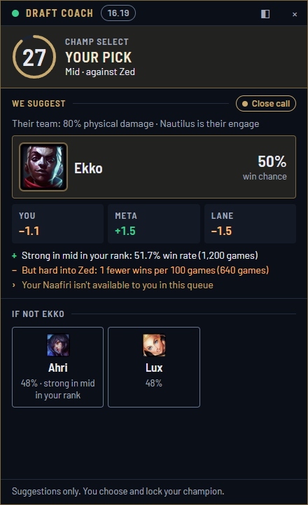
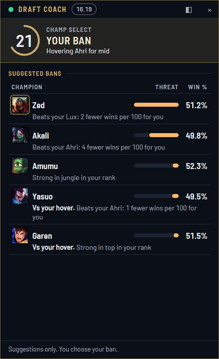
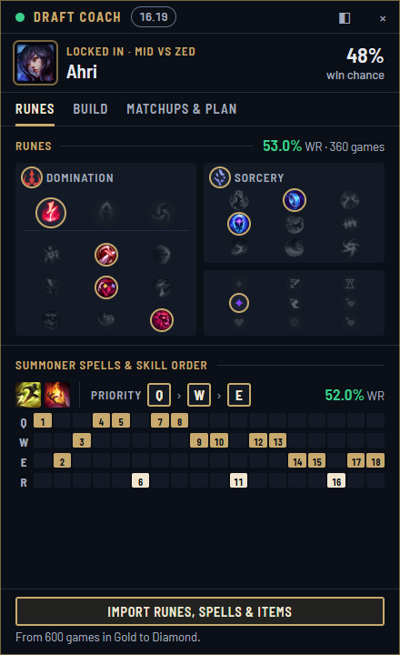
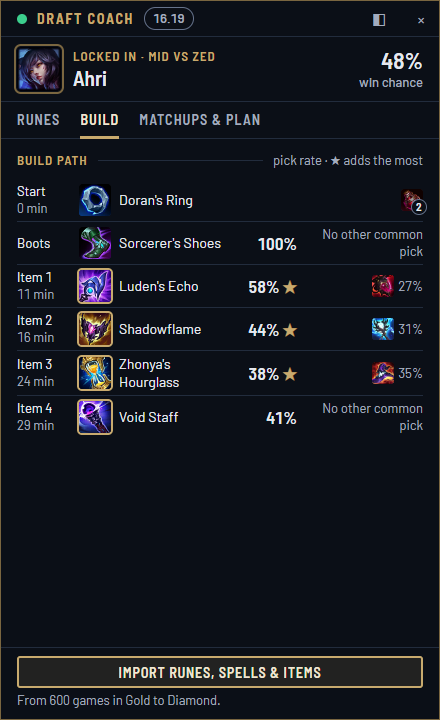
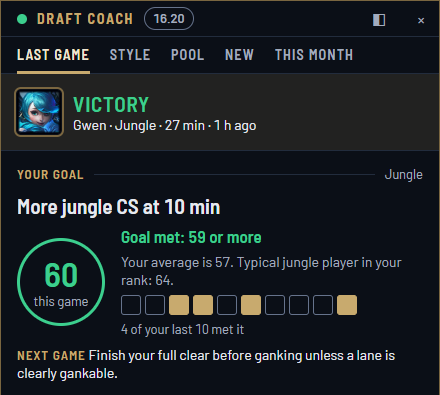
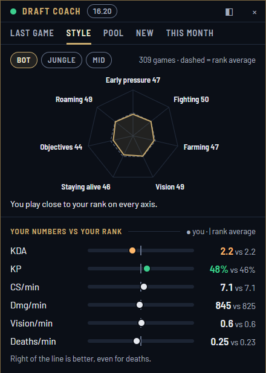

01
Picking out of habit
Your usual champion into a lane it can't play, because it's the one you always lock.
For League of Legends · EUW
LoL Draft Coach sits next to your League client in champ select. It suggests what to ban, pick and build from your own games and the live meta in your rank, and tells you why. You still make every call.

Why it exists
Before a single minion spawns, a game can already lean one way. Most of us draft on autopilot.
01
Your usual champion into a lane it can't play, because it's the one you always lock.
02
Three AD damage dealers and no frontline, and nobody noticed until the first teamfight.
03
A tier list knows the meta but not you, and an old build guide doesn't know this patch.
Draft Coach combines what's strong right now in your rank with what you actually play well, and explains its thinking, so over time you learn to draft better yourself.
How it works
The panel docks to the right of the League client and follows it. It reads the draft live and updates as each pick comes in.
Suggested bans are the champions that hurt your pool and your role the most, not just the ones that are strong in general.

A suggested pick plus two alternatives, ranked from the champions you own. Each one shows what it's made of: your experience on it, how it does in the meta at your rank, and the lane.
Once you lock in: the rune page, summoner spells, skill order, starting items and full build path that win in your rank, against this team.


Between games the panel turns your history into one thing to work on at a time, and keeps track of it.


Why trust it
No guessing and no made-up stats. Every number the panel shows comes from real games, and it tells you when it doesn't have enough.
A collector reads ranked games played at your rank on EUW all day and updates the stats every hour. Recent games count most, so a new patch or a new build shows up in hours instead of weeks.
Your games, your champion mastery and your recent form shape the suggestions. Someone who's played 80 games of a champion gets different advice from someone trying it for the first time.
A scoring engine ranks the picks; the reasons are filled in from its numbers, along with how many games each one comes from. Nothing can invent a stat.
Each suggestion carries a label based on how many games and how big the gap is:
Safe for your account
The app keeps to Riot's rules for third-party apps. It only uses what Riot officially offers: the Riot API, the League client's own local interface, and the in-game Live Client Data API.
Join
Draft Coach is a small private project for a group of friends. You need an invite code from whoever sent you this page. Each code works once.
Download the installer below and run it. A "LoL Draft Coach" shortcut appears on your desktop.
Windows will say "Windows protected your PC" because the app isn't code-signed (signing is expensive for a small private app). Click More info, then Run anyway.
Open the League client and log in first. The app reads your Riot ID from the client, so you never type it.
Open LoL Draft Coach, paste your invite code and click Connect. Your recent games load in a few minutes, and older ones keep loading in the background.
Questions
It's built to keep to Riot's rules for third-party apps: it doesn't touch game memory, it never makes a decision in champ select for you, and the only things it ever writes into your client are a rune page, an item set and your own summoner spells, each only when you click Import. It doesn't track enemy cooldowns or anything else the game doesn't show you.
No. It's free for the friends it's shared with. There are no ads and no account to make: your League login is your account.
Ranked Solo/Duo, Ranked Flex and Normal Draft on EUW. The meta stats are collected for the ranks our group plays in, and the app picks your rank from the client automatically as you climb. ARAM and Arena aren't supported.
The app updates itself. When a new version is out it downloads in the background and installs the next time you close the app.
The server sleeps when nobody's using it and can take up to a minute to wake up. Meanwhile the panel keeps coaching from your games saved on your PC and tries again by itself.
Your own games (from Riot's official API), what the coach suggested in your games, and your rank over time. Other players in your games are never stored by name or ID. Delete my data at the bottom of the panel removes everything about you and signs you out. If the app crashes it sends a crash report so it can be fixed; reports never contain your Riot ID, your account or your Windows user name.
The app belongs to one League account at a time. To switch, click Sign out at the bottom of the panel and connect again with a new invite code.
Windows only for now.